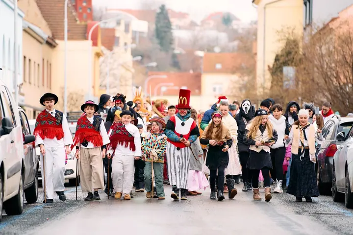
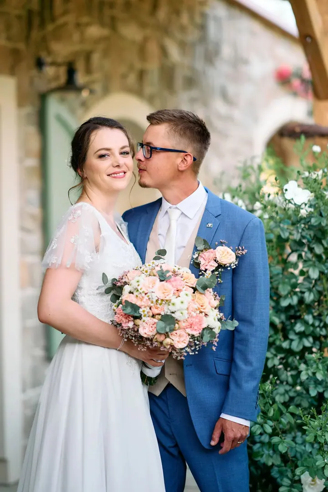
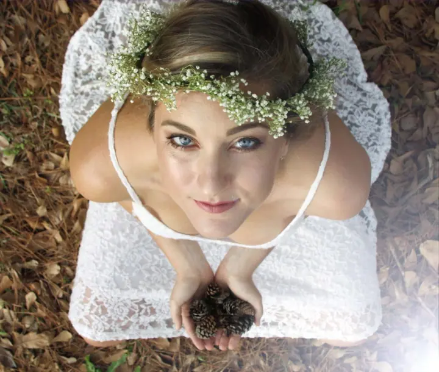

Svatební focení
Menší i celodenní svatby focené přirozeně a reportážně. Součástí je předsvatební focení spojené se schůzkou k naplánování dne a mini ukázka pěti upravených fotografií do druhého dne.





Jmenuji se Mirek Boudný a jsem svatební a portrétní fotograf z Brna. Ve své práci propojuji přirozené zachycení svatebního dne s jemně vedenými portréty a editorial přístupem. Kromě svateb fotím také rodiny a společenské akce.
Více o mně
„Fotka má tu zvláštní sílu otevřít vzpomínku, o které jste ani nevěděli, že ji ještě máte.“
— Miroslav Boudný
Menší i celodenní svatby focené přirozeně a reportážně. Součástí je předsvatební focení spojené se schůzkou k naplánování dne a mini ukázka pěti upravených fotografií do druhého dne.
Focení v klidu, bez stresu a nucených póz, v přírodě, ve městě nebo u vás doma. Dostanete zhruba 20 až 100 upravených fotografií, orientační cena je 2 500 Kč.
Hledám pěkné světlo, kompozici a prostředí, ať je to zajímavá architektura, zahrada nebo louka při západu slunce. Pomohu vám s pohybem i postojem, aby fotky působily uvolněně a zároveň elegantně.
Reportážní focení společenských, kulturních a komunitních akcí pro pořadatele, účastníky i prezentaci akce. Počítejte s přibližně 50 upravenými fotografiemi za hodinu focení.
Fotografie jsou ilustrační
Focení mě doprovází celý život. Byl to velký koníček mého táty, a tak jsem první fotky dělal už ve čtyřech letech s kompaktním Nikonem. Doma jsme se s dárky nejdřív vyfotili a až pak si je pořádně prohlédli. S tátou jsme chodili fotit ohňostroje Ignis Brunensis, třeba z věže kostela na Kraví hoře, odkud bylo vidět celé noční Brno.
Na gymplu jsem si za úspory koupil první digitální kompakt. Potom přišla rodinná zrcadlovka Sony Alpha 700, se kterou jsem procestoval Japonsko, Izrael, Norsko, Skotsko i další země. Dnes fotím na full frame, což byl můj dlouholetý sen.
Velkou oporou je mi manželka, která je opravdový profík na úpravu fotek. Má cit pro detail, spoustu trpělivosti a díky jejím nápadům mají naše fotografie vždycky něco navíc. Ke každému focení přistupuji individuálně a záleží mi na tom, abyste se přede mnou cítili dobře.

Napište přes formulář, e-mailem nebo zavolejte a domluvíme detaily i termín. Po potvrzení svatebního focení se obvykle hradí záloha.
Před svatbou se potkáme, naplánujeme spolu den a nafotíme asi 20 párových fotografií. Rád vám poradím i s harmonogramem z pohledu fotografa.
Dění nechávám přirozeně plynout a zachycuji pohledy, gesta i smích. U portrétů vás jemně navedu, aby fotky působily uvolněně a elegantně.
Mini ukázku pěti upravených fotek máte do druhého dne. Celou svatbu, zhruba 100 až 400 fotografií, dodávám do online galerie během 4 až 6 týdnů.
Fotím hlavně v Brně a okolí, ale po domluvě rád přijedu kamkoliv v rámci ČR i do zahraničí.
U svateb doporučuji ideálně 6 až 12 měsíců předem. U párového a rodinného focení většinou stačí několik týdnů, podle sezóny a volných termínů.
Většina lidí není zvyklá stát před objektivem. I když fotím dokumentárně, určitě vám poradím, aby focení bylo přirozené a uvolněné.
Nepříznivé počasí není problém, i déšť nebo zatažená obloha umí vytvořit krásnou atmosféru. Vždycky najdeme nejlepší možné řešení.